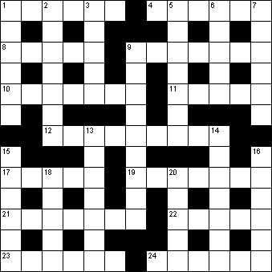

|
|
Daily Quick Crossword
23 December

|
Across 1 Mark made by folding (6)4 Herald's tunic (6) 8 Less common (5) 9 Altered (7) 10 Eight-sided figure (7) 11 Spooky (5) 12 Riddle (9) 17 Franz ---, Hungarian composer (5) 19 Hush (7) 21 Disregarded (7) 22 -- Polo, Venetian traveller (5) 23 Lugger (anagram) (6) 24 Declared (6) |
Down 1 Root vegetable (6)2 Unpredictable (7) 3 Gesture of indifference (5) 5 Non-professional (7) 6 Wrath (5) 7 Evaded (6) 9 Made a saint (9) 13 Not artificial (7) 14 Tower on a mosque (7) 15 Going by plane (6) 16 Small unit of time (6) 18 Underwater detection system (5) 20 Confine within bounds (5) |
|
Copyright © 2018 Simply Daily Puzzles
|